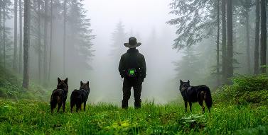

The PCRC was founded by a group of dedicated researchers and paranormal enthusiasts with a shared interest in understanding the unique connection between dogs and the paranormal world. While dogs are known for their heightened senses, their reaction to paranormal events remains largely uncharted in the scientific community. Our research group seeks to change that by documenting strange and unexplained behaviors in dogs and investigating whether they may be linked to unseen spiritual forces or energy fields. We approach each case with a combination of skepticism, open-mindedness, and scientific rigor.
Our primary focus is on dogs that exhibit unusual behaviors—such as unprovoked barking, staring at invisible entities, or acting out of character in specific locations. Through controlled studies and real-world field research, we seek to uncover whether these actions are purely instinctual or if they have a connection to the supernatural.
A former animal behaviorist at a major university, Dr. Vexley turned to fringe research after a personal encounter with a phantom canine in 1997. She now leads field investigations and heads PCRC’s behavioral analysis unit, studying how dogs interact with anomalous energies.
A conspiracy podcast producer turned investigator, Silas handles all PCRC’s video and sound documentation. He’s known for capturing inexplicable audio frequencies and thermal anomalies during dog-led investigations.
With a background in folklore and secret societies, Jessica tracks cult activity involving canines across decades. Her deep knowledge of canine-linked rituals gives the team historical context to otherwise unexplainable phenomena.
A certified K9 trainer who once worked in military service dogs, Arden now trains PCRC’s investigation dogs and guides them during field missions. She has an uncanny ability to notice when a dog is reacting to something “unnatural.”
Cat has proved themselves to be a major help for this organization, they helped us compile our research and helped put together our precious team. Without them the backbone of this site would have never existed!